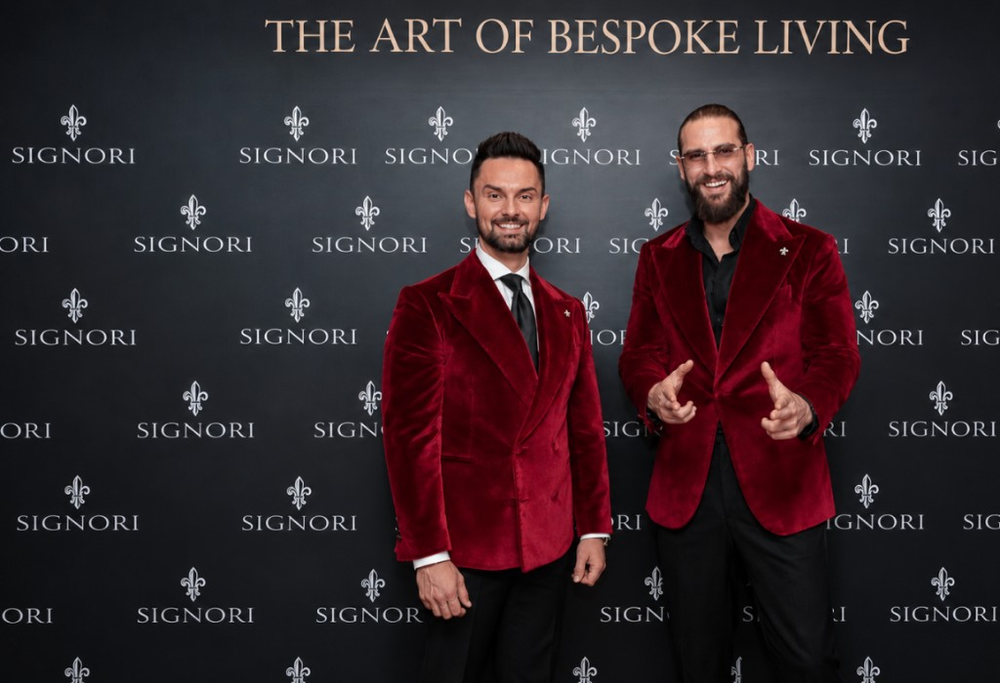
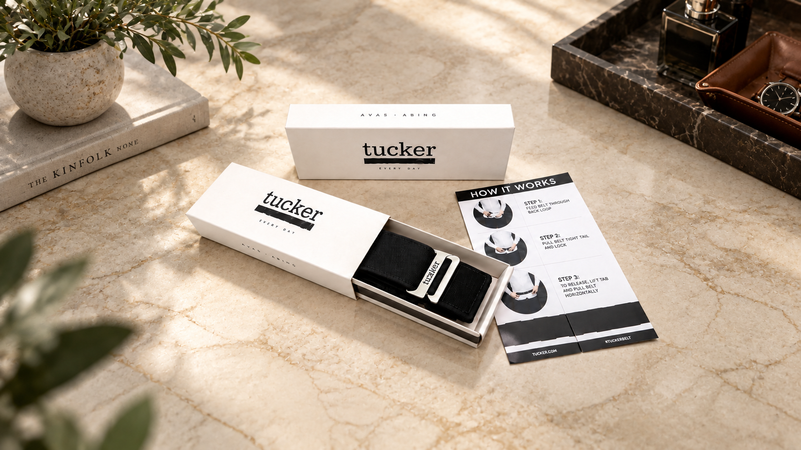
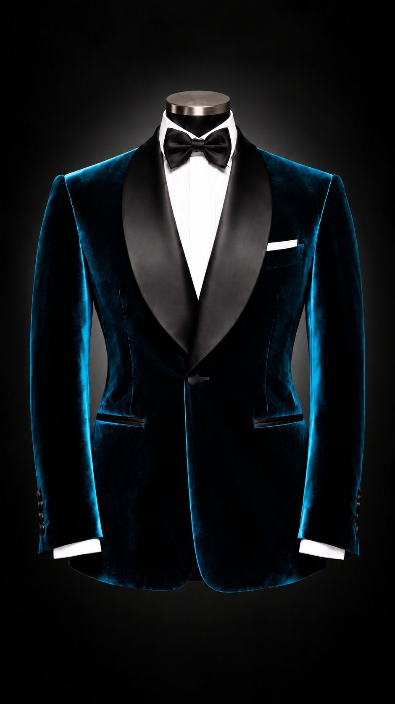
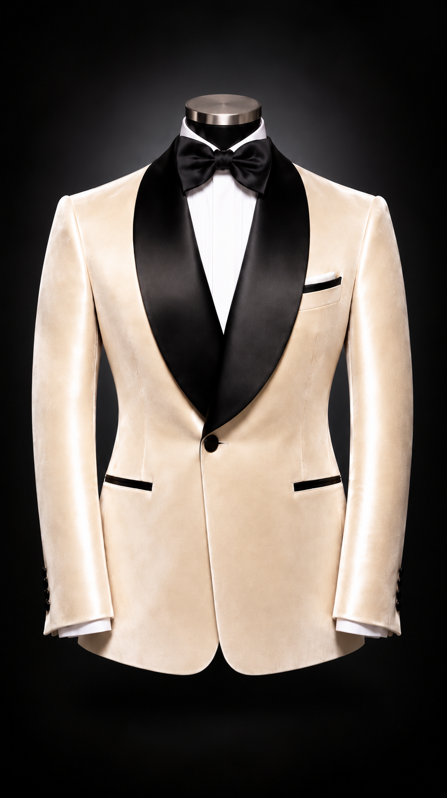
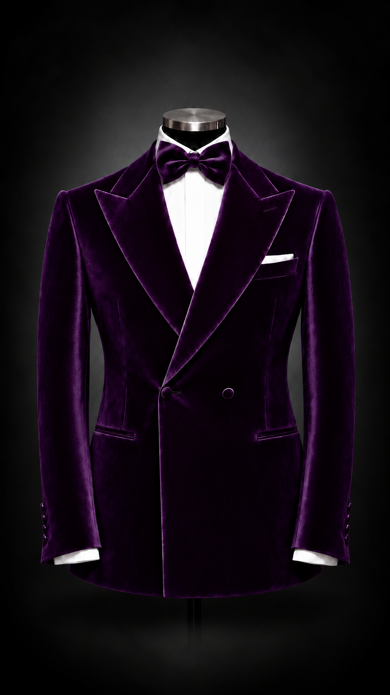
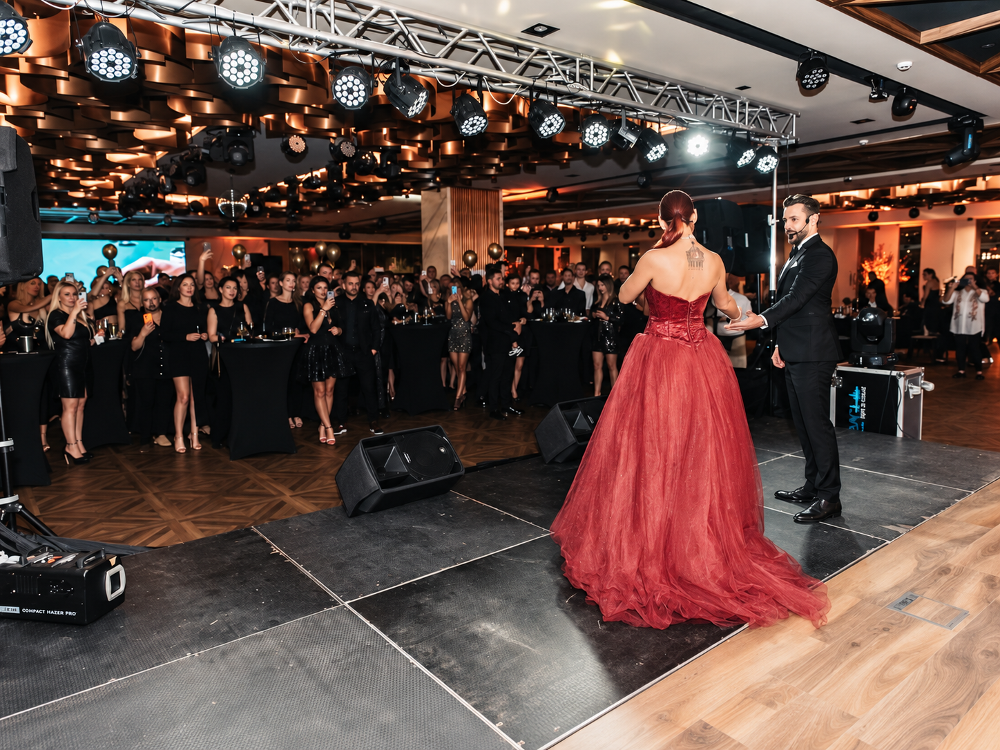

First Creations


The beginning of the Signori story. Our first creations, shaped by craftsmanship and a timeless vision.
Founded in 2014 by Kris and Nenad, SIGNORI began with a vision to create suits shaped around the individuality of each client. Built on precision, craftsmanship and timeless elegance, that vision has grown into a distinctive expression of modern luxury.

It started with a simple need: to create a suit that truly felt right. Kris Popovski and Nenad Pantovic began by creating one for themselves — built around their own fit, style and standards. What started as a personal pursuit soon revealed a wider demand, leading to the creation of SIGNORI and a new approach to bespoke tailoring in Macedonia.
The beginning of the Signori story. Our first creations, shaped by craftsmanship and a timeless vision.

In its early years, SIGNORI focused on establishing bespoke tailoring as a personalised alternative to conventional menswear. The founders spoke openly about the limitations they had encountered in the Macedonian market and their desire to offer garments created around the individual rather than standard sizing. By 2017, SIGNORI was already presenting its approach publicly: custom-made garments developed according to each client's measurements, specifications and personal style.

The early years were a time of building, learning and defining what SIGNORI would become. With every new client and every garment, the foundations of the house became stronger and its identity more distinct.



